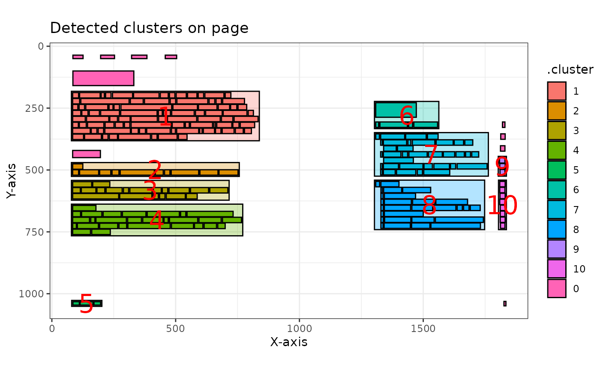
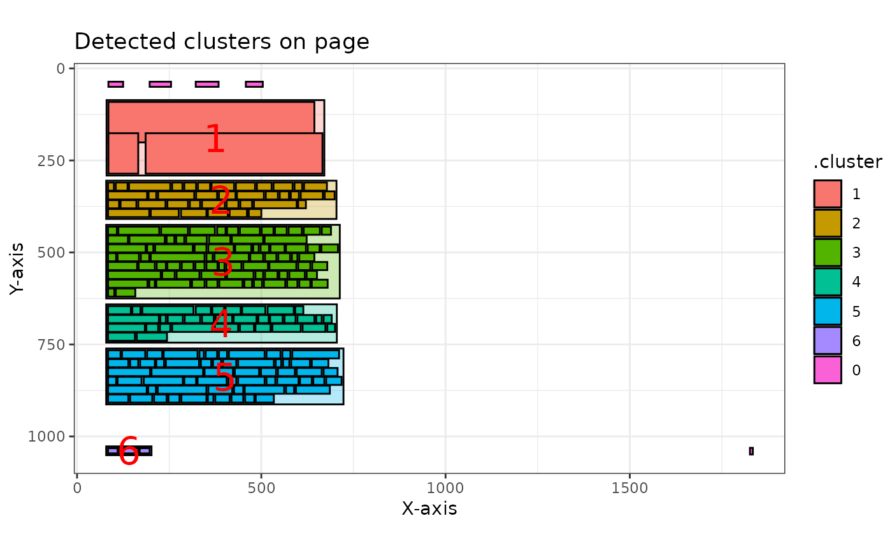

![[Experimental]](figures/lifecycle-experimental.svg)
This function plots the clusters that are detected using the
pdf_detect_clusters() function. Each cluster is assigned a unique color and
number, making them easy to visually detect and compare with the original
PDF.
The function works on both a single page (as a list item from the result of
pdf_detect_clusters()) and a list of pages (the entire output of
pdf_detect_clusters()). When applied to a list of pages, the function
returns a list of ggplot2 objects, one for each page.
This flexibility allows users to visualize clusters for specific pages or for the entire document.
Arguments
- pdf_data_clusters
A single list item from the result of
pdf_detect_clusters(), or the full list of pages returned bypdf_detect_clusters().
Value
A ggplot2 rectangle plot when applied to a single page. When applied to a list of pages, a list of ggplot2 rectangle plots is returned.
Examples
# Example for a single page
npo[[12]] |>
pdf_detect_clusters() |>
pdf_plot_clusters()
# Example for a list of pages
npo |>
head(3) |>
pdf_detect_clusters() |>
pdf_plot_clusters()
#> [[1]]
#>
#> [[2]]

#>
#> [[3]]

#>